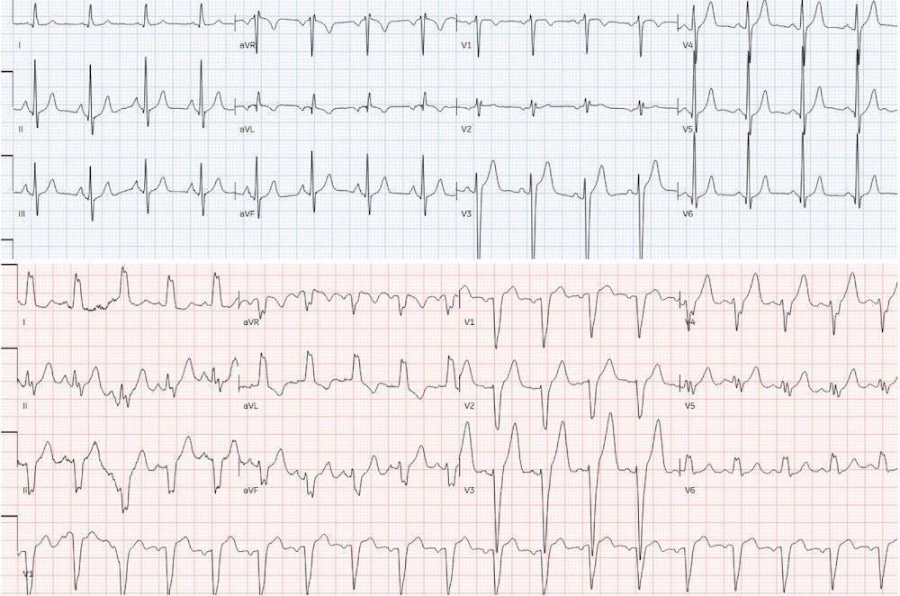
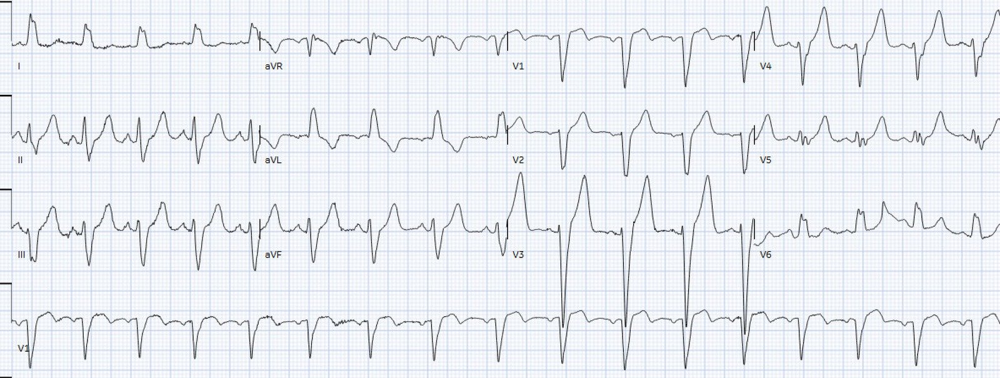
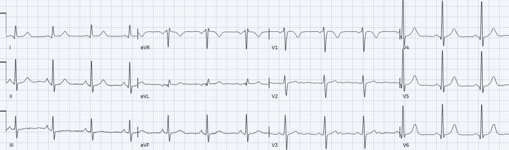
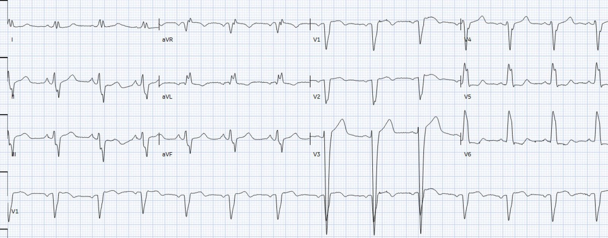
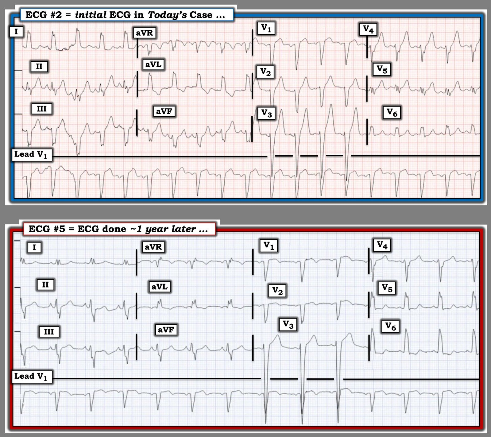
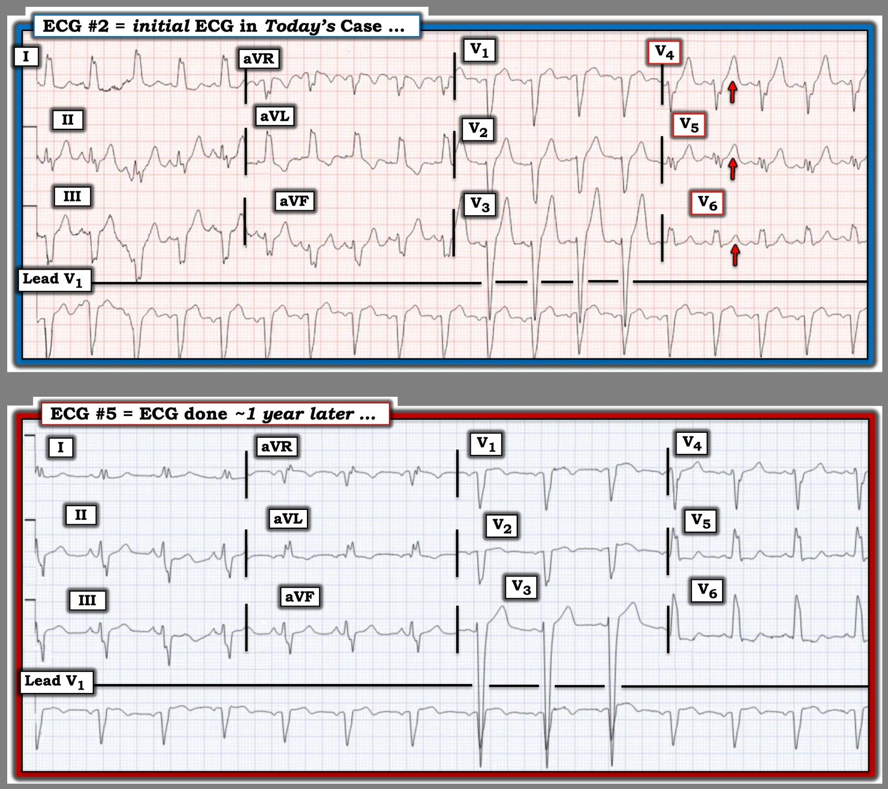

25/05/2026 — Bệnh nhân 65 tuổi đau ngực kèm blốc nhánh trái mới: đây có phải là tắc động mạch vành cấp?
Bản dịch tiếng Việt của bài "65 year old with chest pain + new Left Bundle Branch Block: is this acute coronary occlusion?" – Dr. Smith’s ECG Blog. Giữ nguyên toàn bộ 6 hình ảnh của bản gốc.
bởi Jesse McLaren
Một bệnh nhân 65 tuổi có tiền sử COPD, bệnh động mạch vành, trào ngược và sử dụng cocaine đến khám vì cảm giác bó nghẹt ngực và khó thở trong vài ngày. Lúc phân loại: tần số tim 107, huyết áp 150/90, tần số thở 20, độ bão hòa oxy 98% khi thở khí trời, không sốt. Điện tâm đồ cho thấy blốc nhánh trái (LBBB) mới xuất hiện so với điện tâm đồ trước đó chỉ 10 ngày (khi bệnh nhân đến khám vì khó thở nhẹ và các thăm dò đều không có gì đáng chú ý). Dưới đây là điện tâm đồ trước đó và điện tâm đồ mới: có nên kích hoạt phòng thông tim (cath lab) cho bệnh nhân đau ngực kèm LBBB mới này không?


.
.
.
Có trôi đường nền ở các chuyển đạo chi, nhịp nhanh xoang, LBBB mới. Trên điện tâm đồ không có tiêu chuẩn Sgarbossa cải biên (Modified Sgarbossa Criteria) nào (không có ST chênh lên đồng hướng, không có ST chênh xuống đồng hướng ở V1-3, không có ST chênh lên ngược hướng quá mức), và bệnh nhân ổn định huyết động, không có xác suất tiền nghiệm cao đến mức chẩn đoán được nhồi máu cơ tim do tắc (OMI) chỉ dựa trên lâm sàng. Nhưng vì đau ngực và “LBBB mới”, bác sĩ cấp cứu đã gọi báo động STEMI (code STEMI).
Smith: tần số tim trên điện tâm đồ phía trên hơi dưới 100; tần số trên điện tâm đồ phía dưới hơi trên 100. Ở đây có thể là BBB liên quan tần số. BBB liên quan tần số là gì? BBB liên quan tần số nghĩa là thời kỳ trơ của nhánh bó His ở trạng thái nền dài hơn bình thường, và khi tần số tim tăng, nhánh này không kịp tái cực nên bị blốc về mặt chức năng, dù nó có thể hoạt động bình thường ở tần số chậm hơn. Xem các ca dưới đây.
Khoa tim mạch ghi lại điện tâm đồ, cho thấy hết trôi đường nền và vẫn không có thay đổi thiếu máu cục bộ chồng lên:


Phòng thông tim bị hủy, và CT ngực không thấy bóc tách động mạch chủ nhưng có viêm phổi. Xét nghiệm cho thấy troponin và kali bình thường, bạch cầu tăng. Bệnh nhân cải thiện khi dùng kháng sinh, và điện tâm đồ lúc ra viện cho thấy LBBB đã biến mất:


Lần khám thứ hai vào năm sau: lại một “LBBB mới”
Năm sau, bệnh nhân đến khám vì đau ngực 6 giờ, buồn nôn và nôn, đỡ khi xịt nitro. Dấu hiệu sinh tồn bình thường và điện tâm đồ cho thấy LBBB mới so với điện tâm đồ lúc ra viện trước đó.


Lần này bác sĩ cấp cứu ghi nhận tiêu chuẩn Sgarbossa (cải biên theo Smith) âm tính. Troponin xét nghiệm nhiều lần đều không phát hiện được, nhưng vì bệnh sử đáng lo ngại nên bệnh nhân được nhập viện với chẩn đoán đau thắt ngực không ổn định hay đau ngực do cocaine.
Siêu âm tim cho thấy EF 30% với giảm chức năng lan tỏa, và chụp mạch vành chỉ thấy hẹp 45% RCA, không giải thích được bệnh cơ tim. Bệnh nhân được chẩn đoán bệnh cơ tim do cocaine và được hẹn theo dõi tại chuyên khoa điều trị nghiện. LBBB vẫn còn trên điện tâm đồ lúc ra viện.
Từ “LBBB mới” đến tiêu chuẩn Sgarbossa cải biên theo Smith
Hai lần khám này cho thấy cách xử trí không thống nhất đối với bệnh nhân đau ngực kèm LBBB. Điều này phản ánh cuộc giằng co kéo dài giữa mô hình STEMI và những tiến bộ dựa trên bằng chứng:
- 1994, các thử nghiệm tiêu sợi huyết: tiêu sợi huyết cho đau ngực + BBB (bất kể thời điểm xuất hiện)
- 1996, nghiên cứu Sgarbossa: có thể phân biệt LBBB có và không có nhồi máu cơ tim
- 2000: STEMI được định nghĩa là ST chênh lên khi không có LBBB
- 2004, hướng dẫn STEMI: tiêu sợi huyết cho “LBBB mới hoặc được cho là mới”
- 2012, tiêu chuẩn Sgarbossa cải biên theo Smith: có thể phân biệt LBBB có và không có OMI
- 2013, hướng dẫn STEMI: “LBBB mới” không phải là tương đương STEMI, nhưng không đề cập đến Sgarbossa cải biên
- 2015 và 2021: thẩm định tiêu chuẩn Sgarbossa cải biên ở LBBB và nhịp tạo bởi máy tạo nhịp
- 2022, đồng thuận chuyên gia ACC: công nhận tiêu chuẩn Sgarbossa cải biên theo Smith
- 2023, hướng dẫn ACS của ESC nêu rằng LBBB hoặc nhịp tạo bởi máy tạo nhịp “ngăn cản việc đánh giá chính xác sự có mặt hay vắng mặt của ST chênh lên”
- 2025, hướng dẫn ACS của ACC: không đề cập đến tiêu chuẩn Sgarbossa cải biên, thay vào đó “LBBB mới hoặc được cho là mới lúc nhập viện ít gặp và không nên được coi là có giá trị chẩn đoán nhồi máu cơ tim cấp (AMI) nếu đứng riêng lẻ; cần đối chiếu lâm sàng.”
- 2025, tổng quan hệ thống và phân tích gộp: thời điểm xuất hiện của LBBB không có giá trị chẩn đoán, trong khi tiêu chuẩn Sgarbossa cải biên có độ nhạy cao và độ đặc hiệu rất cao
De Alencar, từ 51 nghiên cứu, nhận thấy ACS kèm LBBB có tử vong nội viện cao hơn, nhưng thời điểm xuất hiện của LBBB trung tính về mặt chẩn đoán (với LR+ và LR- có khoảng tin cậy vắt qua giá trị trung tính 1.0). Ngược lại, tiêu chuẩn Sgarbossa cải biên có LR+ là 11.3 và LR- là 0.18, nên có thể phân biệt LBBB có và không có OMI (trừ khi bệnh nhân có khả năng tiền nghiệm rất cao, khi đó điện tâm đồ không đủ nhạy để phát hiện OMI bất kể có LBBB hay không).
(Xem tổng quan hệ thống và phân tích gộp của de Alencar tại đây; và bài xã luận của McLaren, Helseth và Smith tại đây)
Điều cần nhớ
- “LBBB mới” không giúp nhận diện bệnh nhân tắc động mạch vành cấp.
- LBBB không ngăn cản việc đánh giá sự có mặt hay vắng mặt của các dấu hiệu OMI trên điện tâm đồ
- Tiêu chuẩn Sgarbossa cải biên theo Smith có thể nhận diện OMI khi có LBBB hoặc nhịp tạo bởi máy tạo nhịp
- ACS có khả năng tiền nghiệm rất cao (ví dụ thiếu máu cục bộ kháng trị hoặc mất ổn định huyết động/điện học) cần chụp mạch vành bất kể điện tâm đồ
- Hãy nhớ đến blốc nhánh liên quan tần số
Đây là một ca rất thú vị về LBBB liên quan tần số, đồng thời cho thấy “trí nhớ tim” (cardiac memory): Chest pain and LBBB. LBBB resolves and there is V1-V3 T-wave inversion.
= = =
==================================
BÌNH LUẬN CỦA TÔI, bởi KEN GRAUER, MD (25/5/2026):
Tôi thấy ca hôm nay của bác sĩ McLaren là một minh họa rất thú vị về các biến thể của LBBB (blốc nhánh trái – Left Bundle Branch Block).
- Bệnh nhân 65 tuổi này có một chút “đủ thứ” — bao gồm:
- Bệnh phổi (COPD đã biết — và một đợt viêm phổi được xác nhận bằng CT phải nhập viện dùng kháng sinh tĩnh mạch — nhưng có một lần khác đến khoa cấp cứu vì khó thở tương tự mà các thăm dò đều âm tính);
- Tiền sử lạm dụng cocaine lâu năm (được cho là nguyên nhân gây bệnh cơ tim do cocaine — đồng thời là nguồn gốc các cơn đau ngực từng lúc của bệnh nhân);
- Bệnh tim nền đáng kể (với chẩn đoán “bệnh động mạch vành” — giảm chức năng thất trái lan tỏa với EF ~30% trên siêu âm tim, nhưng chỉ hẹp 45% RCA ở lần thông tim gần nhất — cùng các triệu chứng khó giải thích kéo dài theo thời gian, gồm cảm giác “bó nghẹt” ngực và đau ngực đáp ứng với nitroglycerin).
- Và — một loạt điện tâm đồ cho thấy LBBB từng lúc.
= = =
LBBB từng lúc của bệnh nhân …
Trong suốt phần trình bày thú vị của bác sĩ McLaren — bệnh nhân này có 5 điện tâm đồ — trong đó 3 trên 5 cho thấy LBBB, nhưng 2 trên 5 thì không có rối loạn dẫn truyền này!
- Việc phát hiện LBBB từng lúc — gợi ý có yếu tố rối loạn dẫn truyền liên quan tần số. Nhưng dù 4 điện tâm đồ đầu tiên phù hợp với nguyên lý kinh điển rằng LBBB liên quan tần số sẽ xuất hiện khi tần số tim nhanh hơn và biến mất khi tần số chậm lại — điện tâm đồ thứ 5 lại cho thấy LBBB vẫn tồn tại dù tần số tim chỉ ở mức vừa phải, khoảng ~80 lần/phút.
- Ý nghĩa của LBBB phụ thuộc vào “những gì đi kèm với nó”. Ở bệnh nhân có bệnh sử phức tạp như mô tả ở trên — LBBB từng lúc nhiều khả năng nhất là hậu quả của bệnh cơ tim đã được ghi nhận. Nhưng LBBB từng lúc liên quan tần số cũng có thể xảy ra đơn thuần do một rối loạn nhịp nhanh mà không có bất kỳ bệnh tim nền nào. Ngược lại — bệnh nhân có LBBB thường trực gần như luôn có một dạng bệnh tim nền đáng kể nào đó.
- Dẫn truyền kiểu LBBB quan trọng về mặt lâm sàng — vì nó không chỉ làm thay đổi trình tự khử cực thất, mà cả trình tự tái cực thất, từ đó gây khó khăn trong việc phân biệt các “bất thường” ST-T do thiếu máu cục bộ cấp với những thay đổi đơn thuần do rối loạn dẫn truyền. Tiêu chuẩn Sgarbossa cải biên theo Smith hỗ trợ rất nhiều trong đánh giá thay đổi ST-T ở bệnh nhân LBBB — nhưng các tiêu chuẩn này không hoàn hảo.
- ĐIỂM THEN CHỐT (PEARL): Với bất kỳ dạng rối loạn dẫn truyền liên quan tần số nào (tức là bao gồm cả LBBB, RBBB và blốc phân nhánh liên quan tần số) — tần số khởi phát dẫn truyền kiểu BBB thường không giống với tần số mà tại đó dẫn truyền bình thường được phục hồi (tức là BBB liên quan tần số có thể bắt đầu khi tần số tim vượt quá 90 hoặc 100 lần/phút — nhưng dẫn truyền bình thường có thể không phục hồi cho đến khi tần số tim giảm trở lại 80 lần/phút hoặc thấp hơn). Như có thể hình dung — chân lý này về sự khác biệt tiềm tàng giữa tần số “bật” và tần số “tắt” của BBB liên quan tần số đôi khi khiến ta khó xác định bệnh nhân có khiếm khuyết nền của hệ thống dẫn truyền hay chỉ là một hiện tượng thuần túy liên quan tần số.
= = =
Đánh giá sóng ST-T trong ca hôm nay:
Hãy XEM LẠI 2 trong số 5 điện tâm đồ của ca hôm nay — mà để cho rõ, tôi đã đặt cạnh nhau trong Hình 1.
- Cả hai điện tâm đồ trong Hình 1 đều cho thấy nhịp xoang với LBBB. Không điện tâm đồ nào có mức ST chênh lên tại điểm J không tương xứng (tức là >25% độ sâu của sóng S đi trước).
- = = =
- CÂU HỎI: Có khác biệt về mặt định tính trong hình dạng sóng ST-T giữa 2 bản ghi không?
= = =
Hình 1: Tôi đã đặt lại điện tâm đồ thứ 2 và thứ 5 của ca hôm nay.


= = =
Suy nghĩ của tôi:
Khi lần đầu xem lại ca hôm nay — tôi lo ngại về hình dạng sóng ST-T ở các chuyển đạo V4,V5,V6 trên điện tâm đồ #2.
- Dù đúng là sóng ST-T ở các chuyển đạo V2 và V3 của điện tâm đồ #2 rõ ràng nhọn hơn so với điện tâm đồ #5 — tôi cho rằng điều này không có giá trị chẩn đoán, vì có LBBB và ST chênh lên tại điểm J rất ít.
- Tuy nhiên, về mặt định tính (như tôi làm nổi bật dưới đây trong Hình 2) — tôi thấy sóng ST-T ở các chuyển đạo V4,V5 của điện tâm đồ #2 lớn không tương xứng — với sóng T dương ở chuyển đạo V6 mà “lẽ ra không được dương”, vì QRS của LBBB ở chuyển đạo này chủ yếu dương.
- Do bệnh nhân này kể có “cảm giác bó nghẹt ngực trong vài ngày” vào lúc ghi điện tâm đồ #2 — tôi đã lo ngại về khả năng có một quá trình thiếu máu cục bộ cấp.
= = =
Hình 2: Tôi đã ghi nhãn các chuyển đạo trên điện tâm đồ #2 khiến tôi lo ngại.


= = =
= = =